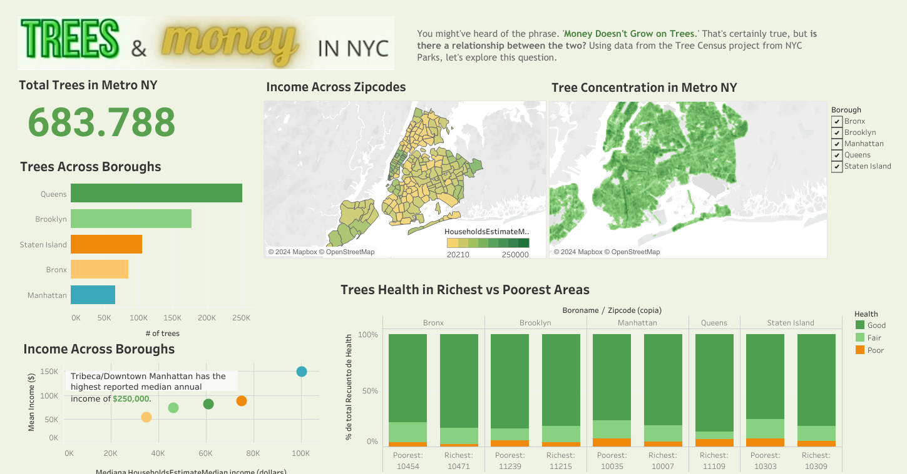

NYC Tree Census & Income Dashboard using Tableau
You might've heard the phrase, "Money Doesn't Grow on Trees." That's certainly true, but is there a relationship between the two? Using data from the Tree Census Project from NYC Parks, let's explore this question.
Tools used:
- MS Excel
- Data Manipulation
- Data Cleaning
- Tableau Prep
- Tableau Desktop
Key findings:
- The are 683,788 trees in the New York Metropolitan area.
- Queens is the borough with the highest quantity of trees.
- Manhattan has the highest average income, with an average income of $148,516.00.
- And at the same time, Manhattan has the lowest tree quantiy around all the analysed boroughs.
- Have we found a relation between average income and quanity of trees?? Let's See!
- The borough with the lowest income is Bronx, averaging $54,103.00.
- BUT! Bronx is also the second borough with the lowest quantity of trees, so maybe not.
- Apparently, these studies suggest that, at least among the neighborhoods of New York, the average income in the neighborhoods does not have a direct relationship with the quantity or health of the trees found there.